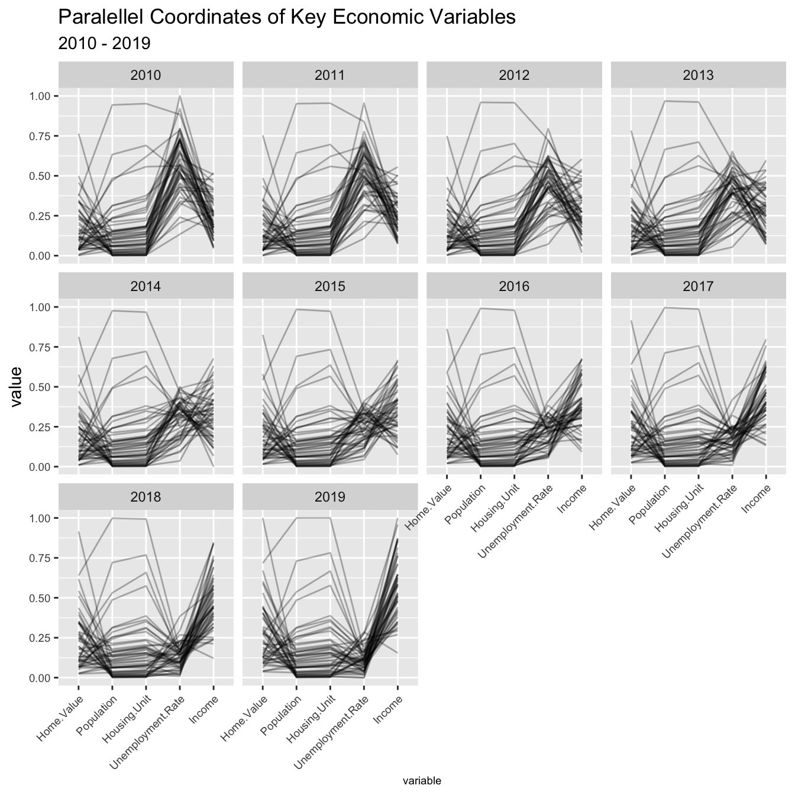

Chapter 4 Missing values
library(tidyverse)
library(patchwork)
library(reshape2)
# Add NAs to mtcars dataset
plot_missing <- function(mycars, percent) {
missing_patterns <- data.frame(is.na(mycars)) %>%
group_by_all() %>%
count(name = "count", sort = TRUE) %>%
ungroup()
# count the missing value number of missing patterns
countlist <- list()
for (name in names(missing_patterns)){
if (name != "count") {
totalMissingCount <- 0
for (i in seq(1,nrow(missing_patterns))) {
if(missing_patterns[i,name] == TRUE) {
totalMissingCount <- totalMissingCount + missing_patterns$count[i]
}
}
countlist[[name]] <- totalMissingCount
}
}
countlist <- countlist[order(-unlist(countlist))]
missingOrder <- names(countlist)
missing_var <- data.frame(colSums(is.na(mycars)))
colnames(missing_var) <- c("countNA")
missing_var <- missing_var %>% arrange(desc(missing_var$countNA)) %>% mutate(variable = factor(missingOrder, levels=row.names(missing_var)))
missing_patterns_nocount <- subset(missing_patterns, select = -count)
# turn it into numeric dataframe
mm <- as.matrix(missing_patterns_nocount)
m3 <- as.data.frame(mm)
completecase_index <- which(rowSums(m3) == 0, arr.ind=TRUE)
#find the row of complete case
m3[rowSums(m3) == 0,] <- 2
m3$Missing_pattern <- seq(from = 1, to=nrow(m3))
# turn it into pivot_longer
m4 <- m3 %>% pivot_longer(!Missing_pattern, names_to = 'Val', values_to = 'value' )
m4$Val <- factor(m4$Val, levels = missingOrder)
m4$value <- as.factor(m4$value)
#plot
p1 <- ggplot(m4, aes(x = Val, y = Missing_pattern, fill = value)) +
geom_tile(color = 'white', lwd = 0.4, linetype = 1, show.legend = FALSE) +
scale_fill_manual(values = c(alpha('lightgrey',0.5),alpha('mediumpurple2',0.6),alpha('grey'))) +
scale_y_continuous(trans = "reverse", breaks = seq(1, nrow(m4), len = nrow(m4))) +
theme(panel.background = element_blank()) +
ylab('missing pattern') +
xlab('variable') +
theme(text = element_text(size=7),axis.text.x = element_text(angle = 90, vjust = 0.5, hjust=1))
if(percent == TRUE){
missing_var$percentage <- (missing_var$countNA/(sum(missing_var$countNA)/2))*100
p2 <- missing_var %>% ggplot(aes(x=fct_reorder(missing_var$variable, -missing_var$percentage), y = missing_var$percentage)) +
geom_bar(stat = 'identity') +
geom_col(color = 'lightblue', fill = 'lightblue') +
labs(title = 'Missing value patterns', x = " ", y = "% rows missing") +
scale_y_continuous(limits = c(0, 100), breaks = seq(0, 100, 25)) +
theme_bw() +
theme(panel.grid.minor.x = element_blank(),
panel.grid.major.x = element_blank()) +
theme(text = element_text(size=7),axis.text.x = element_text(angle = 90, vjust = 0.5, hjust=1))
patterncount <- missing_patterns[ncol(missing_patterns)]
patterncount <- patterncount %>% mutate(Tohight = ifelse(1:nrow(patterncount) == completecase_index,"yes","no"))
p3 <- patterncount %>% ggplot(aes(x=reorder(row.names(patterncount),(count/sum(count) * 100)), y = (count/sum(count)*100), fill = Tohight)) +
geom_bar(stat = 'identity') +
scale_fill_manual(values = c("yes" = "grey", "no" = "lightblue"), guide = FALSE) +
labs(x = ' ', y = 'row count') +
scale_y_continuous(limits = c(0, 100), breaks = seq(0, 100, 25)) +
coord_flip() +
theme_bw() +
theme(panel.grid.major.y = element_blank(),
panel.grid.minor.y = element_blank()) +
theme(axis.text.x = element_text(vjust = 0.5, hjust=1))
}else{
p2 <- missing_var %>% ggplot(aes(x=fct_reorder(missing_var$variable, -missing_var$countNA), y = missing_var$countNA)) +
geom_bar(stat = 'identity') +
geom_col(color = 'lightblue', fill = 'lightblue') +
labs(title = 'Missing value patterns', x = " ", y = "num rows missing") +
theme_bw() +
theme(panel.grid.minor.x = element_blank(),
panel.grid.major.x = element_blank()) +
theme(text = element_text(size=7), axis.text.x = element_text(angle = 90, vjust = 0.5, hjust=1))
patterncount <- missing_patterns[ncol(missing_patterns)]
patterncount <- patterncount %>% mutate(Tohight = ifelse(1:nrow(patterncount) == completecase_index,"yes","no"))
p3 <- patterncount %>% ggplot(aes(x=reorder(row.names(patterncount),count), y = count, fill = Tohight)) +
geom_bar(stat = 'identity') +
scale_fill_manual(values = c("yes" = "grey", "no" = "lightblue"), guide = FALSE) +
labs(x = ' ', y = 'row count') +
coord_flip() +
theme_bw() +
theme(panel.grid.major.y = element_blank(),
panel.grid.minor.y = element_blank())
}
patch = (p1 | p3) + plot_layout(widths = c(4, 1))
patch2 = (p2 | plot_spacer()) + plot_layout(widths = c(3, 1))
final_plot <- patch2 / patch + plot_layout(widths = c(4, 1), heights = c(1, 4))
return(final_plot)
}
For our project, we are analyzing Zillow data & census data to draw parallels between population data & home sale prices. In this missing values section, we used our self-created function to analyze the completeness of the zillow dataset that contains median sale prices by state over time.
From looking at the output, here are the main observations:
- Overall, we have complete data for 80% of the states.
- For most the data that’s missing (~10%+), most of it is in 2021 (Jan to Oct).
- There is a small set series of data that is missing 2018 data. However, it’s the least common of 6 patterns.